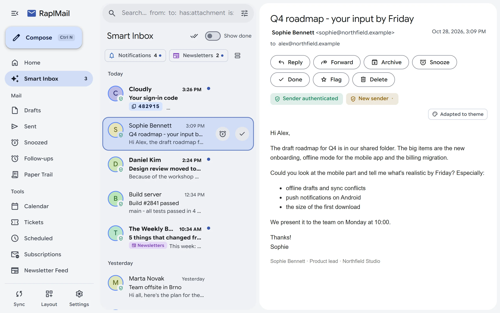

{{i:hub}}
No middleman
RaplMail talks IMAP and SMTP straight to your provider. No RaplMail account, no proxy, nothing to sign up for.
A fast, private mail app for people who live in their inbox. Clear mail from the keyboard (press e and it's done), find anything in a keystroke, and keep every message, password and key on your own computer.

Press e and a message is done: gone from your inbox, still safe on the server. Snooze what can wait, pin what can't, and let the noise fold into groups. Every action can be undone.
Snooze, pin and VIP. Snooze to an exact time or until I'm back, and mail returns when you sit back down at your desk. VIP senders always float to the top.
The noise, grouped. Newsletters, notifications and promotions wait in their own groups, and three or more notifications from one sender fold into a single bundle.
Screener and rules. First-time senders wait for your approval. Rules move, archive, mark done or block by sender, domain or subject, with a live preview.
Undo anything. Done, snooze, archive, delete, move and bulk actions all come with an undo, and archive and delete wait for it before they touch the server.
Search matches parts of words across the sender, recipients, subject and body, so ertel finds erteltrading@.... Narrow it down with operators, or just describe what you're after.
Operators and regex. from: to: subject: has:attachment is:unread, or a /regex/ when you need one.
Inside attachments. Words in Word, Excel and PowerPoint files, plain text, CSV, JSON and code are indexed too.
By meaning. An optional local index finds "that quote about server costs" even when the mail never used those words.
Instant, from anywhere. Ctrl K opens a command palette that turns into live search as soon as you type an operator. Save any search as a smart folder.
RaplMail checks risky attachments without ever running them. Every file is parsed, decoded and scanned, and you get a verdict before you double-click.
Warned before you open. Executables, macro documents, decoy names like payroll.pdf.exe, right-to-left filename tricks and files whose contents don't match their extension.
Hidden content found. A clean-looking PDF or Office file with a launch action, JavaScript, embedded files or VBA macros is flagged all the same.
Macros in plain language. Obfuscated VBA is decoded, so a disguised downloader shows what it really does: its triggers, the URLs it calls and the files it drops.
An isolated inspection view. Open any file in a WebAssembly view with no access to your files, your network or the app, see everything it would attempt, and get a score from 0 to 100.
{{i:info}}Static analysis only. RaplMail never executes a file, not even in a virtual machine.
Your mail is nobody's business, ours included. There is no RaplMail server, so there is nothing for us to see.
RaplMail talks IMAP and SMTP straight to your provider. No RaplMail account, no proxy, nothing to sign up for.
Passwords and keys are sealed with your master password (Argon2id and Fernet). Cached mail can be encrypted at rest too.
No ads, no analytics, no telemetry. Tracking pixels are blocked, so senders can't tell when you read their mail.
Link your PCs through one of your own mailboxes, encrypted with a passphrase that never leaves your devices.
Run a model on your own PC with Ollama, and nothing leaves your machine. Or bring your own OpenAI, Anthropic or OpenAI-compatible key: calls go straight to that provider, never through us. Don't want AI? One switch turns it all off.
Catch me up. A long thread becomes a TL;DR with the key points and action items, and your whole inbox can get a daily briefing.
Replies and rewrites. Drafts in your tone and in the language you write in. Rephrase, fix grammar, translate or shorten. It never sends anything on its own.
An assistant that asks first. Ask it to archive or mark mail and it shows the exact action and a sample of the affected messages before anything happens.
Connect your AI apps. Let Claude and other MCP apps search, sort and draft in your mailbox: read only, read and organize, or full access.
Built for people who get a lot of mail and want to be done with it.
Type your address and RaplMail finds the servers. Microsoft 365 and Gmail sign in with OAuth, and any IMAP mailbox works.
All Inboxes, a Newsletter Feed, Paper Trail for receipts and orders, and Follow-ups for sent mail nobody answered.
WYSIWYG or Markdown, one-drag signatures with images, templates, send later and mail merge.
Invitations turn into events you can answer. CalDAV and CardDAV sync with Nextcloud, Fastmail, iCloud, Seznam and more.
Sign, encrypt, verify and decrypt, with your keys and certificates managed in Settings.
Archive, move and send without a connection. A queue catches up the moment you're back online.
When a verification code arrives, it's already on your clipboard. Paste it and carry on.
Every mailing list you get with its 30-day read rate, the ones you never open first, and one-click unsubscribe.
DMARC, DKIM and SPF results, warnings for lookalike and punycode domains, and links whose text lies about where they go.
Colours from one seed or your Windows accent, light, dark or automatic, plus classic themes from OLED black to Dracula and Nord.
Custom shortcuts for everything, a command palette for every action, and a local metrics API for Home Assistant or Prometheus.
Closes to the tray while mail keeps arriving, shows unread mail on the taskbar and can start with Windows.
Most mail apps make you choose: fast workflows behind a paid cloud middleman, or local privacy inside a heavy, dated interface. RaplMail gives you both halves.
| RaplMail | Thunderbird | Outlook | Spark | Superhuman | Hey | |
|---|---|---|---|---|---|---|
| Price | Free | Free | With Windows | Freemium | $30 / month | $99 / year |
| Any IMAP/SMTP account | {{i:check}}Yes | {{i:check}}Yes | {{i:check}}Yes | {{i:check}}Yes | {{i:close}}No | {{i:close}}No |
| No cloud middleman | {{i:check}}Yes | {{i:check}}Yes | {{i:close}}No | {{i:close}}No | {{i:close}}No | {{i:close}}No |
| Keyboard triage (e to done) | {{i:check}}Yes | {{i:close}}No | {{i:close}}No | {{i:check}}Yes | {{i:check}}Yes | Partial |
| Screener, Feed and Paper Trail | {{i:check}}Yes | {{i:close}}No | {{i:close}}No | {{i:close}}No | {{i:close}}No | {{i:check}}Yes |
| Local AI, no cloud needed | {{i:check}}Yes | {{i:close}}No | {{i:close}}No | {{i:close}}No | {{i:close}}No | {{i:close}}No |
Prices in USD as listed by each vendor. Check their sites for current plans.
Free for Windows 10 and 11. Install it, choose a master password, add an account. That's the whole setup.
Prefer MSI? Download the MSI installer
The short answers. The wiki has the long ones.
Yes. There is no subscription and no account to create: download it and use it.
No. RaplMail connects straight to your mail provider over IMAP and SMTP. If you add a cloud AI key, those calls also go straight from your PC to that provider.
Microsoft 365 and Outlook, Gmail and Google Workspace, and any provider with IMAP and SMTP, such as Seznam, Fastmail, iCloud or your own domain. Type your address and RaplMail finds the server settings.
No. AI buttons stay hidden until you set up a provider, and one switch in Settings turns every AI feature off.
Never. Files are parsed and scanned as data, not run. Even the isolated inspection view only reads the file, inside a WebAssembly module with no access to your PC.
Yes. Device sync links your installs through a hidden folder in one of your own mailboxes, encrypted with a passphrase. Done, snooze, pin and your rules sync automatically.
RaplMail checks for a new version every few hours, downloads it in the background and installs it when you click Restart & update. A file without a valid RaplMail signature is refused.
Every version and what changed in it.
Loading...